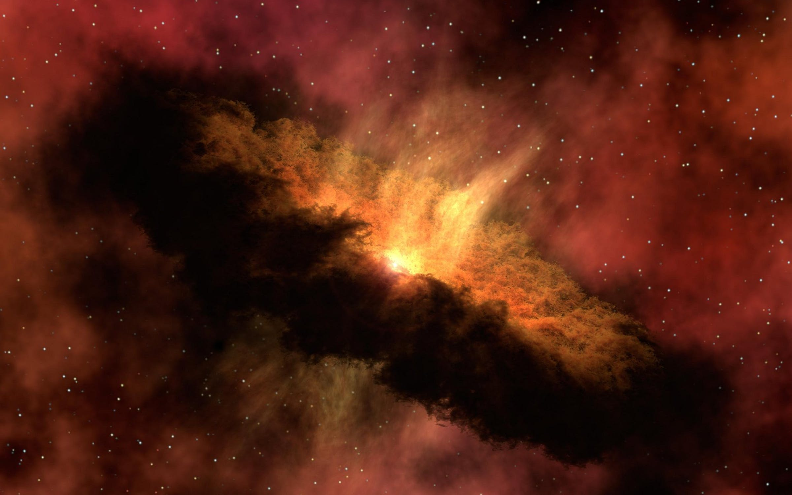

Solsystemet er det planetsystemet som består av blant annet solen, jorden og månen. Det består av solen og de himmellegemer som den binder til seg gjennom gravitasjon, og har sin opprinnelse i en gravitasjonskollaps av en gigantisk gass- og støvsky for 4,6 milliarder år siden. 
Hvis solsystemet intereserer deg, kan du lese mer om dette på mine to andre sider som forklarer oppbygningen og størrelsen.